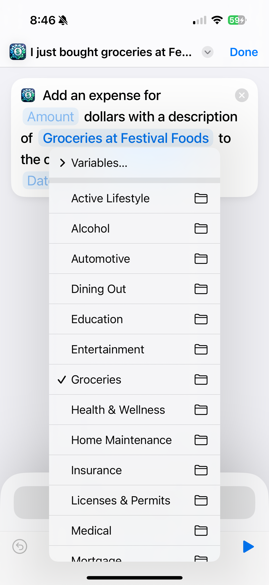

Unlock the full potential of Penny by creating custom Siri Shortcuts tailored to your spending habits. This guide will walk you through the steps to set up personalized voice commands like "I just bought groceries at [Store Name]," making it even easier to track your expenses.
Benefits of Custom Siri Shortcuts
Quick Expense Logging: Add expenses with a simple voice command.
Personalized Commands: Use phrases that are natural to you.
Default Values: Set default descriptions, categories, and more.
Step-by-Step Guide
Prerequisites
Ensure you have the latest version of Penny installed.
Siri must be enabled on your device.
The Shortcuts app should be installed (it comes pre-installed on most iOS devices).
Step 1: Open the Shortcuts App
Tap on the Shortcuts app icon to launch it.
Step 2: Navigate to the Shortcuts
At the bottom of the screen, tap on the Shortcuts tab to browse available shortcuts.
Step 3: Select Penny
Scroll down and find "Penny" and select it.
Step 4: Create a new shortcut
Long-press the "Save an expense" Shortcut and select New Shortcut.
Step 5: Set Default Values
a. Set the Description
Tap on the "Description" field.
Enter a default description, e.g., "Groceries at Festival Foods".
You can use variables or leave placeholders to fill in later.
b. Set the Category
Tap on the "Category" field. A list of your existing categories will appear. This list contains only categories you've already used. If the desired category isn't present, open Penny and add an expense using that category before continuing.
Select "Groceries" from the list.

Step 7: Customize the Shortcut
Rename the Shortcut
Tap on the shortcut name at the top and rename it to something like "I just bought groceries at Festival Foods". Siri will listen for this phrase so make it natural to you.
Step 8: Save the Shortcut
Tap "Done" at the top right corner to save your customized shortcut.
Step 9: Test Your New Shortcut
Try out your new voice command:
Activate Siri by saying "Hey Siri".
Say your custom phrase, e.g., "I just bought groceries at Festival Foods".
Siri will prompt you to enter the amount.
Provide the amount, and Penny will log the expense with your default values.
Watch Siri in Action
"Hey Siri, I just bought groceries at Festival Foods"
Video: Demonstration of setting up and using a custom Siri Shortcut with Penny.
Tips for Creating More Custom Shortcuts
Different Categories: Repeat these steps for other categories like "Dining Out", "Fuel", or "Entertainment".
Specific Stores or Vendors: Create shortcuts for frequent expenses, e.g., "I just filled up at Shell".
Use Variables: Incorporate variables to make your shortcuts more dynamic.
Managing Your Shortcuts
Editing Shortcuts: You can edit your shortcuts anytime by tapping the "..." button.
Deleting Shortcuts: Swipe left on a shortcut in the My Shortcuts tab to delete it.
Organizing Shortcuts: Use folders in the Shortcuts app to keep your Penny shortcuts organized.
Need Help?
If you have any questions or need assistance setting up your custom shortcuts, feel free to reach out to our support team or visit the Penny Help Center.
Conclusion
By creating custom Siri Shortcuts for Penny, you make expense tracking faster and more personalized. Tailor the app to fit your lifestyle and enjoy seamless financial management with just your voice.
 How to Set Up Custom Siri Shortcuts with Penny
How to Set Up Custom Siri Shortcuts with Penny